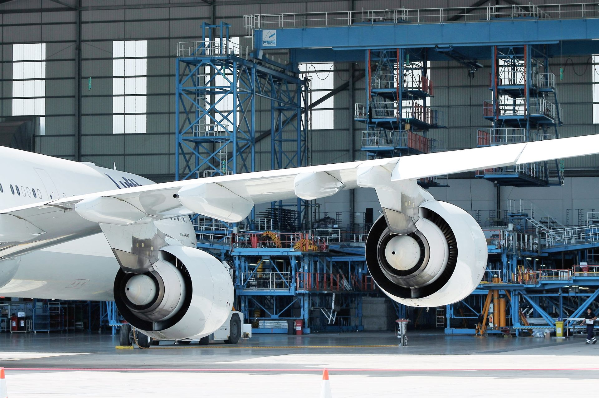
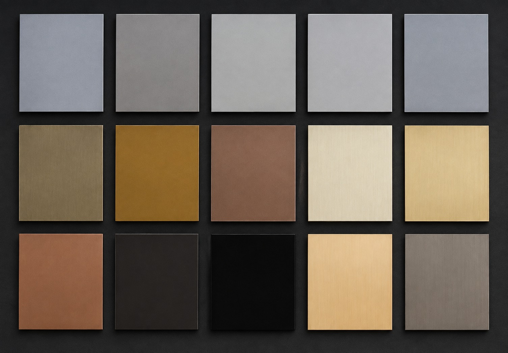

Surface treatment
Plating, electroplating, zinc, chrome, nickel, anodizing, blasting and industrial painting.
Industry · Engineering · Precision
Boreal Plating integrates surface treatment, machining and component manufacturing to meet technical requirements across industrial supply chains.
Structured processes, quality control and attention to detail throughout the supply flow.
Structure and experience
Boreal's institutional materials present an industrial trajectory built on engineering, process control and technical expertise. The company operates in Joinville, Santa Catarina, with solutions tailored to project requirements.

Capabilities
Services and processes presented in Boreal's materials for manufacturing, machining and surface treatment.
Plating, electroplating, zinc, chrome, nickel, anodizing, blasting and industrial painting.
Precision turning and milling, as well as industrial welding services.
Custom metal components and technical polymer molding.
Surface preparation and finishing according to functional, technical and visual requirements.
Feasibility studies and solution development according to project specifications.
Research, testing, material characterization and process and coating development.

R&D
Research and Development covers material characterization, performance testing, surface analysis and coating and process development.
Explore R&DQuality and compliance
The operation is structured to maintain consistency, traceability and process control throughout production.
View certificationsQuality system
ESG
Environmental policy, renewable energy, transparency, pay equity, ethics and information security are covered by Boreal's available documents.
Explore ESG Industrial structure
Industrial structure
Plating Engineering
EngineeringSend your technical or commercial requirement. Boreal can assess the project and guide the next step.